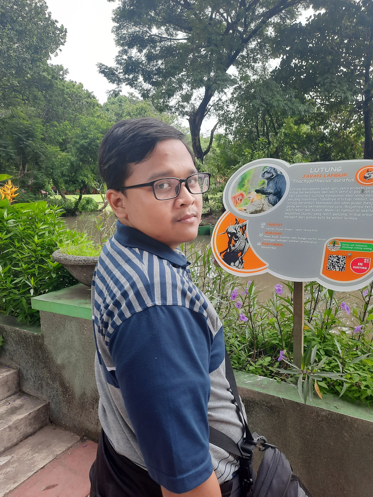

W E B S I T E

Ega Prabu Pamungkas
Saya merupakan Fullstack Developer dengan fokusan front-end React JS dan back-end Flask. Selain kedua itu, saya juga memiliki kemampuan general menggunakan Bootstrap 5, dan PHP Server. Saya juga memiliki pengalaman di Cloud Computing dimana mengkonfigurasi server dengan VPS di Digital Ocean maupun GCP menggunakan Docker. Saya merupakan lulusan jurusan Teknik Informatika Insitut Teknologi Sepuluh Nopember.
Keahlian
Pendidikan
Institut Teknologi Sepuluh Nopember
Teknik Informatika
2019 - 2024
Pengalaman
Schematics ITS
Staff Ahli, Divisi National Logic Competition
Maret 2021 - November 2021
- Bertanggung jawab dalam membuat soal dan permainan puzzle dengan mengimplementasikan dasardasar logika dan matematika
Himpunan Mahasiswa Teknik Computer (HTMC) ITS
Staff Profesi
Mei 2021 - Desember 2021
- Bertanggung jawab menjalankan program kerja berupa kompetisi programming, capture the flag, kompetisi data mining, dan kompetisi pengembangan game serta software
Bangkit Academy led by Google, Tokopedia, Gojek, & Traveloka
Cloud Computing Learning Path
Februari 2022 - November 2022
- Mempelajari pengembangan aplikasi backend menggunakan Hapi.js dan testing menggunakan Postman
- Mempelajari tentang perangkat cloud computing di Google Cloud Platform, bagaimana membangun CI/CD dengan Docker di Compute Engine GCP (VM di GCP).
- Mengembangkan RESTful API untuk aplikasi android menggunakan hapi.js sebagai Capstone Project yang dilakukan bersama grup.
- Mengembangkan API menggunakan Firebase Realtime Database sebagai databse No-SQL untuk menyimpan data pengguna.
- Menggunakan App Engine pada GCP untuk RESTful API.
Project
Recruiter Assistant
Sistem Rekomendasi pada RuangKarir Double Track Menggunakan Metode SAW dan AHP
Tugas Akhir Sarjana Teknik Informatika ITS
- Sistem rekomendasi yang dapat digunakan oleh rekruiter untuk mencari calon karyawan yang cocok berdasarkan multikriteria dan multi-bobot yang didefinisikan oleh rekruiter
- Sistem dibangung menggunakan React JS untuk Front-End dan Flask untuk Back-End
-
Demo sistem dapat dilihat di Recruiter Assistant Website.
Untuk uji coba gunakan kredensial berikut:
- u: prabuega
- p: 12345678